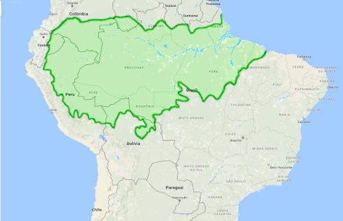

A Amazônia é uma das regiões mais ricas do planeta em biodiversidade, com cerca de 50% da biodiversidade mundial. A região abriga milhares de espécies de plantas e animais, algumas ainda desconhecidas ou pouco estudadas.
A Amazônia é fundamental para o combate ao aquecimento global e às mudanças climáticas. A floresta absorve água do solo e a libera para a atmosfera, contribuindo para a formação de nuvens e para a precipitação
A Amazônia é a maior reserva de madeira tropical do planeta, além de ter grandes estoques de borracha, castanha, peixe e minérios.
A floresta é um potencial tesouro de medicamentos, com plantas que podem ser usadas ou inspirar novos tratamentos.
A Amazônia abriga frutas exóticas como o pepino do mato, mari-mari, abiu, bacaba e pajurá, que são fontes de nutrientes e sabores únicos.
As florestas da Amazônia funcionam como grandes barreiras contra incêndios.
A manutenção de florestas nas margens de rios evita erosões e assoreamentos.